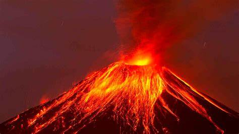
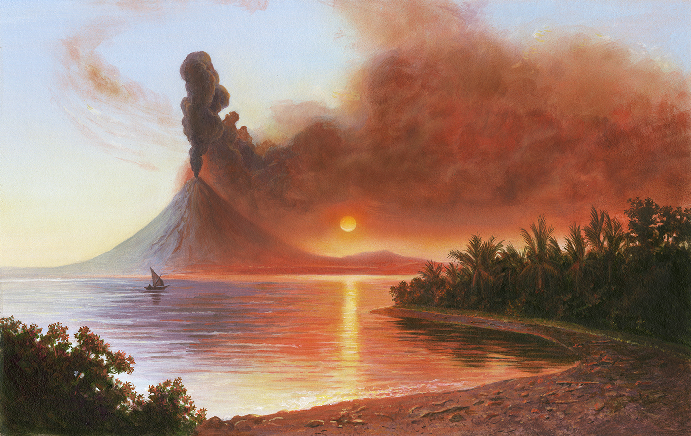

Los volcanes representan la misma fuerza destructiva de la naturaleza en todo su explendor, algo a lo que no debemos perderle el respeto. Por eso es importante recodar cuáles han sido aquellos volcnaes que han marcado un antes y un después en la historia de la humanidad.
Volcanes mas Importantes del Mundo
- Monte Vesubio (Italia): Es famoso por su erupción en el año 79 d.C., que destruyó las ciudades romanas de Pompeya y Herculano, conservándolas casi intactas bajo las cenizas volcánicas y proporcionando una visión única de la vida en la antigüedad.
- Monte Santa Helena (Estados Unidos): Su erupción en 1980 fue una de las más destructivas en la historia de los Estados Unidos. Alteró drásticamente el paisaje circundante, destruyendo vastas áreas de bosque y creando un nuevo cráter.
- Monte Etena (Estados Italia): Es uno de los volcanes más activos del mundo y el volcán más grande de Europa. Ha tenido numerosas erupciones a lo largo de la historia y su actividad volcánica ha influido significativamente en la geología y la cultura de Sicilia.
- Kilauea (Hawái): Es uno de los volcanes más activos del mundo y ha estado en erupción continua desde 1983. Ha formado paisajes volcánicos únicos en la Isla Grande de Hawái, incluyendo flujos de lava que han llegado hasta el océano.
- Monte Fuji (Japón): Es el volcán más alto de Japón y un símbolo cultural e icónico del país. Ha inspirado obras de arte y literatura a lo largo de los siglos y es venerado como un lugar sagrado.
- Volcán Krakatoa (Indonesia): Su erupción en 1883 fue una de las más catastróficas en la historia moderna, causando tsunamis devastadores, alteraciones climáticas globales y la destrucción de la isla que lo albergaba.
- Monte Tambora (Indonesia): Su erupción en 1815 fue la más potente registrada en la historia. La gran cantidad de material expulsado a la atmósfera causó un enfriamiento global, resultando en el "Año sin verano" en 1816, con impactos en la agricultura y la sociedad en todo el mundo.

